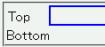
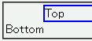

ボーダーが設置されている親要素を持つ要素にwidthプロパティまたはheightプロパティを具体的な値で指定したとき、その要素に指定したマージンが正しく設置されない。
<div style="margin-left: 3em; border:2px solid blue;"> <div style="margin-left:-3em; width:50%;">Top</div> </div> <div>Bottom</div>
div要素が入れ子になっている部分では親要素に3emの左マージン、子要素に-3emの左マージンを設置しているので、文字列「Top」と「Bottom」の縦方向の位置はほぼ揃っているはずです。
Netscape7.1標準モード
WinIE6.0標準モード
WinIE6.0の標準モードと互換モードで不具合の発生を確認しました。